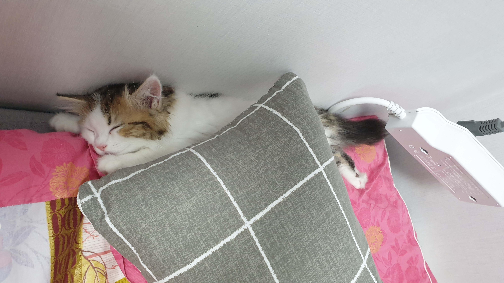

청이는 먹는 것을 좋아합니다
그래서 집사가 거실로 나갈 떄마다 따라와서 웁니다
울면서 냉장고나 주방으로 집사를 유인합니다.
냉장고에는 퓨퓨가, 주방에는 츄르가 있기 때문입니다.
청이는 어렸을 때부터 사람을 정말 좋아했습니다.
청이를 처음 입양 받아 택시를 타고 집으로 가는 중, 청이한테는 첫 외출이라 덜덜 떨면서도 사람을 보면서 그르릉 거렸던 것이 기억에 남습니다.
그렇게 집으로 온 첫날... 청이는 눈을 마주치기만 해도 그르릉 거리더니 첫날부터 배를 까고 침대에서 잤습니다.
